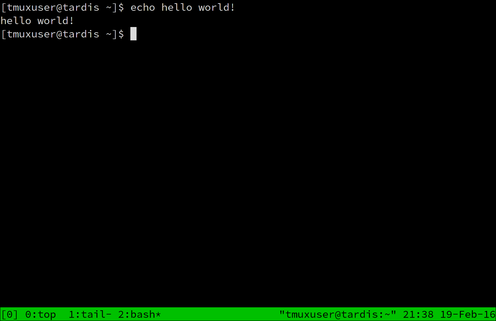

Your browser doesn't support impress.js. Try Chrome or Safari.
by Erik Johnson
20 February 2016
- A device that interleaves several activities; a switching device.
- (computing, telecommunications) A device that combines several input signals into a single output signal.
tmux allows you to keep multiple virtual terminals in a single terminal window. It shows information about all of the windows in a status bar.

It sure does! But it is so much more than that!
- Like screen, there is a "copy mode", where text can be selected and copied to a buffer, and then pasted into another window.
- tmux keeps a buffer history, remembering by default the last 20 times text was copied (can be tweaked with the buffer-limit option)
- In copy mode, tmux is capable of using both vi and emacs keybindings (emacs is the default). In screen, achieving emacs keybindings in copy mode must be done manually by changing keybindings and is hard to get right.
-
Like screen, tmux can monitor a window for activity, but tmux can also monitor a window for inactivity (tmux calls this "silence").
- Window splitting (technically available in GNU Screen via an unofficial patch)
- Sessions can interact with one another. Windows can be moved between sessions for better organization.
- All tmux settings are scriptable. Any line that you would otherwise place in your tmux config file can be run from the shell by adding "tmux" before it. They can also be run directly (without the "tmux" before them) from within tmux using its command prompt.
- The configuration syntax, especially that of the status bar, is much easier to understand than GNU Screen's.
- tmux server - All sessions run under the tmux server, and inter-session communication happens over a socket in /tmp/tmux-<uid>
- session - Group of windows. Each has a unique ID, they count up from 0 but can be renamed to include non-numeric characters.
- window - A numbered window inside a session
- pane - An individual terminal inside a window
- command prompt - a prompt you can launch where tmux commands can be run
The server has one or more sessions, each session has one or more windows, each window has one or more panes.
- A key or key combo (by default Ctrl-b) which when entered tells tmux that the next key/key combo is a tmux command.
- Entering prefix + ? will show the current keybindings.
- This screen contains the tmux config syntax for each keybinding.
- Makes it easy to copy and paste into your tmux config file to make little tweaks to the configuration.
- prefix + c - Add a new window
- prefix + " - Split window "vertically"
- prefix + % - Split window "horizontally"
- prefix + d - Detach from session
- prefix + <digit> - Switch to numbered window
- prefix + w - Switch window by selecting from a list
- prefix + s - Switch session by selecting from a list
- prefix + l - Switch to last window used
- prefix + ; - Switch to last pane used
- prefix + : - Open the command prompt
tmux refers to splitting in what I find to be a backward way. It considers prefix + % to be a horizontal split because it adds a vertical separator and the new pane is located horizontally to the active pane. I prefer to rebind these:
# Change keybindings for window splitting so they make
# sense. Adding -c to make the new pane start in the
# current working directory.
unbind-key '"'
unbind-key %
bind-key _ split-window -c "#{pane_current_path}"
bind-key | split-window -h -c "#{pane_current_path}"
- Use prefix + [ to enter copy mode. The keys used for movement, text selection, and copying while in this mode depend on the mode-keys setting. A full map of these keys can be found in the WINDOWS AND PANES section of the manpage. These bindings can be listed by running the tmux command list-keys -t vi-copy (or emacs-copy).
- Use prefix + ] to paste the most recently copied text.
- Use prefix + = to select from the buffer history. The selected buffer will be pasted after you hit Enter.
- Commands can do things like set configuration, resize panes, run shell commmands, etc.
- They can be bound to keys and executed using prefix + <key>, but they can also be run manually
- Via the tmux command prompt
- From the shell (by adding "tmux" before them, i.e. tmux list-keys)
- The status line comes with some good information by default, but there are a lot of ways to customize it.
- The options starting with status- in the manpage can be used to configure the status line.
- status-left and status-right set text that sits at the left and right of the status line
- status-left-length and status-right-length set max widths for these items
- status-justify controls the justification of the window list (default: left)
- See the FORMATS section of the manpage for variables that can be used in the status line.
# enable 256 color mode
set-option -g default-terminal "screen-256color"
# vi keybindings in copy mode
set-window-option -g mode-keys vi
# vi keybindings in command prompt
set-option -g status-keys vi
# enable utf-8
set-window-option -g utf8 on
set-option -g status-utf8 on
# start window/pane numbering at 1 instead of 0
set-option -g base-index 1
set-option -g pane-base-index 1
# Automatically renumber windows
set-option -g renumber-windows on
# toggle activity monitoring in current window
bind-key m set-window-option monitor-activity\; display-message -F 'monitor-activity -> #{?monitor-activity,on,off}'
- man tmux - One of the easiest-to-read, most detailed manpages out there, and a great resource for learning tmux
- #tmux - Official IRC channel on irc.freenode.net
- http://tmux.github.io/ - Official website
- tmux: Productive Mouse-Free Development - Electronic/physical book
- Ebook has been revised twice, but only covers features up to version 1.8 (current release as of Feb. 2016 is 2.1)
- Last revised in April 2014